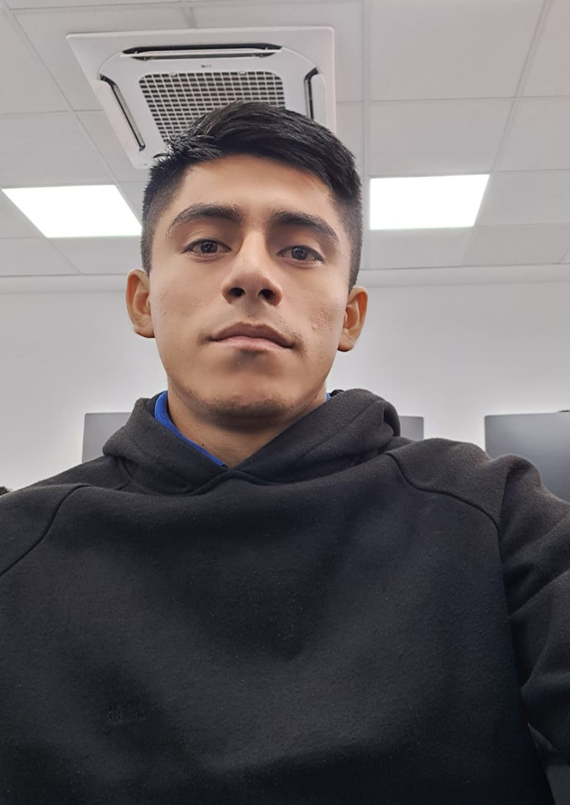

BRAYAN EDUARDO RISCO SOSA
Estudiante de Ciberseguridad (SENATI) | Especialista en Redes & Gestión Operativa
Perfil Profesional
Estudiante de 3er semestre en Ciberseguridad en SENATI con sólida formación técnica en arquitectura de redes (CCNA 1, 2 y 3) y administración de sistemas operativos Windows y Linux (Red Hat). Mi perfil combina la agilidad técnica del sector IT con una disciplina operativa rigurosa forjada en el sector logístico de consumo masivo.
Poseo una alta capacidad para el cumplimiento de estándares de seguridad, gestión de activos y resolución de incidencias bajo presión. Enfocado actualmente en profundizar conocimientos en defensa de redes y desarrollo web seguro.
Formación Técnica y Certificaciones

Concepto básico de Hardware

Concepto básico de redes

IT Essentials
Experiencia Laboral
Operador de Equipos de Acarreo
Jun 2023 - Actualidad- Operación técnica de equipos pesados y despacho de productos de consumo masivo.
- Ejecución de Check-list de seguridad y mantenimiento preventivo de equipos.
- Gestión física de inventarios asegurando rotación estratégica (FIFO/FEFO).
Asesor Técnico Móvil (Help Desk N1)
Ene 2020 - Abr 2023- Diagnóstico y resolución de incidencias técnicas en dispositivos móviles.
- Soporte remoto orientado a la configuración de sistemas y aplicaciones.
- Gestión de tickets en plataformas CRM para seguimiento de casos.